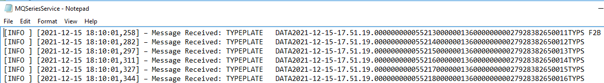
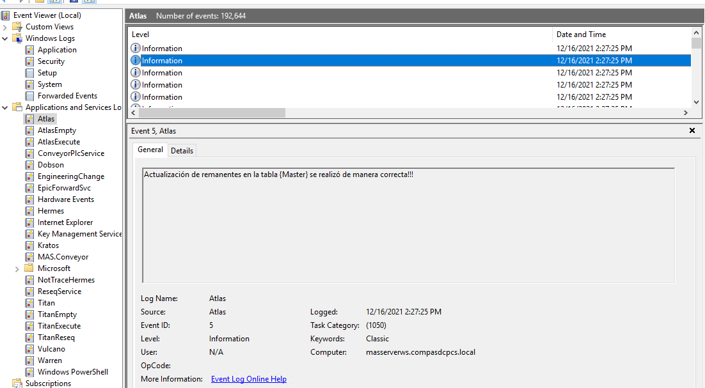

Configuración
El archivo de configuracion se llama logstash.yml y está ubicada en la ruta C:\Program Files\logstash-7.16.1\config. Contiene 3 secciones principales: input, filter y output.
Input
La información de entrada que recibe Logstash es por Filebeat o Winlogbeat (se instalarán más adelante). Los dos son simplificados como beats y se comunica por medio del puerto 5044.
input {
beats { port => 5044
}
}
Filter
Filter es la parte más importante en cuanto al tratamiento de los datos se refiere, puede contener varios pluggins y sus usos dependerán del formato en que Logstash reciba la información y el formato de salida que se requiera para indexar a Elasticsearch.
Para el caso del presente proyecto existen 2 fuentes de logs, los que se escriben directamente en algún fichero (ver ejemplo DDS) y aquellos que son generados como logs de Windows (ver ejemplo MACOPS). Para el primer caso Filebeat será el encargado de enviarselo a Logstash y para el segundo será Winlogbeat.
Logs del sistema DDS: 
Logs del sistema MACOPS: 
Filebeat y Winlogbeat difieren en el formato de salida, por lo tanto la configuración también tendrá algunas diferencias. De ser así se incluirá
Grok
Grok es una herramienta que permite identificar partes de una cadena de texto mediante expresiones regulares y asignarlos a nuevos campos que serán enviados a Elasticsearch. Cuenta con un diccionario que agrupa las expresiones regulares más comunes y simplifica su uso. Este plugging sólo será usado para las instancias de Logstash que reciban información de Filebeat, ya que no cuentan con formato alguno, sólo es una cadena de texto llamada message.
grok {
match => {"message" => [
"(?m)[%{WORD:level} ] [%{TIMESTAMP_ISO8601:date}]%{GREEDYDATA:description}",
"(?m)[%{WORD:level}] [%{TIMESTAMP_ISO8601:date}]%{GREEDYDATA:description}",
"(?m){%{WORD:level} }{%{TIMESTAMP_ISO8601:date}}%{GREEDYDATA:description}",
"(?m){%{WORD:level}}{%{TIMESTAMP_ISO8601:date}}%{GREEDYDATA:description}",
"(?m)%{WORD:level} [%{TIMESTAMP_ISO8601:date}]%{GREEDYDATA:description}"
]}
}
donde:
-
(?)Indica que la cadena de texto se puede ser de multilínea. -
\[%{WORD:level} \]La barra invertida se usa como caracter de escape para ignorar los Brackets. El signo porcentaje indica el inicio de una expresión regular. WORD es parte del diccionario mencionado anteriormente, su equivalente regex es\b\w+\b. Con esto se captura la palabra INFO, ERROR o WARN y se asigna al campo level. -
\[%{TIMESTAMP_ISO8601:date}\]También forma de parte del diccionario y se conforma de otros términos. Dependiendo el formato de la fecha dependerá del log, en esta ocasión se usó el ISO8601. -
%{GREEDYDATA:description}"Para el caso de uso y de los logs que se tienen, no se necesita separar más campos específicos, por lo que el resto de la cadena de texto se asignara como un campo llamado descripción. La expresión Regex de GREEDYDATA es.*.
Pareciera que la expresiones se repiten pero no son iguales porque difieren en el campo \[%{WORD:level} \] y \[%{WORD:level}\], esto para prevenir errores de parseo para los casos en que el level de los logs sea [INFO] o [INFO ], por ejemplo.
Mutate
A diferencia de Grok, este pluggin no crea nuevos campos a partir de otros, si no que transforma los ya existentes. Los 2 son usados para las instancias de Logstash que reciben informacion de Filebeat y Winlogbeat.
Cuando se recibe por Filebeat
mutate {
rename => {"@timestamp" => "processTime"}
rename => {"[fields][system]" => "system"}
rename => {"[fields][service name]" => "service name"}
rename => {"[beat][hostname]" => "hostname"}lowercase => ["[system]"]
lowercase => ["[service name]"]
lowercase => ["[hostname]"]
}
donde:
-
renamecomo su nombre indica renombra el campo de la izquierda por el de la derecha."@timestamp"es la hora en que se produjo el log, Los campos con prefijo[fields]son personalizados y se agregan en la configuración de Filebeat. Los que tienen prefijo[beats]son metadata de Filebeat y Winlogbeat. -
lowercasetransforma el nombre del campo a minúscula. Particularmente se eligieron estos 3 campos porque forman parte del nombre del inidice en Elasticsearch y no se admiten caracteres en mayusculas.
Cuando se recibe por Winlogbeat
mutate {
rename => {"message" => "description"}
rename => {"[fields][system]" => "system"}
rename => {"[fields][service name]" => "service name"}
rename => {"[beat][hostname]" => "hostname"}lowercase => ["[system]"]
lowercase => ["[service name]"]
lowercase => ["[hostname]"]uppercase => ["level"]
}
Son prácticamente iguales, salvo por 2 cuestiones:
- En Winlogbeat
messagecontiene el cuerpo del log, lo que en Filebeat se designó comodescription. levelviene pór defecto en minusculas y como los logs que se trataron con Filebeat son en mayusculas, se cambian para tenerlos en el mismo formato.
Lo anterior se añade para tener uniformidad de los datos en Elasticsearch.
Translate
Este pluggin sirve para cambiar el valor de los datos en base a un diccionario, con estructura similar a un switch case. Sólo se agregó en instancias de Logstash que tienen como fuente a Winlogbeat porque nativamente los logs de caracter informativo en su campo level tienen el valor INFORMATION, a diferencia de los logs tratados por Filebeat cuyo valor es INFO. Entonces nuevamente se busca la uniformidad de los datos.
translate {
field => "level"
target => "level"
dictionary => {
"INFORMATION" => "INFO"
}
}
Con lo anterior se indica que se analizará el campo field y lo resultante será modificado sobre sí mismo (opcionalmente se puede apuntar a otro campo). Si el dato tiene el valor INFORMATION entonces se sobreescribe como INFO.
Date
Cuando se usa Grok, por defecto la zona horaria que utiliza es UTC. Con la siguiente instrucción se cambia al huso horario de México.
date {
match => ["date","YYYY-MM-dd: HH:mm:ss,SSS", "ISO8601"]
timezone => "America/Mexico_City"
}
Output
Antes de enviar los datos a Elasticsearch es conveniente capturar errores de parseo.
output {
if "_grokparsefailure" in [tags] {
file {
codec => line {
format => "%{[processTime]} | %{[system]} | %{[service name]} : %{[tags]} %{[message]}"}
path => "C:\Program Files\Logstash\logs\grokparsefailure log.txt"
}
Los ficheros de logs que se utilizaron no tienen un formato único, algunos varían por un espacio o caracter que generará un error en caso de que no exista algún patron Grok que lo cumpla. Si esto ocurre Logstash añade el tag _grokparsefailure al objeto. Para evitar que éste se envie a Elasticsearch con el formato incorrecto, se guarda en el archivo grokparsefailure log.txt para posterior consulta y correccion de patrones.
else if "_dateparsefailure" in [tags]{
file {
codec => line {
format => "%{[processTime]} | %{[system]} | %{[service name]} : %{[tags]} %{[message]}"}
path => "C:\Program Files\Logstash\logs\dateparsefailure log.txt"
}